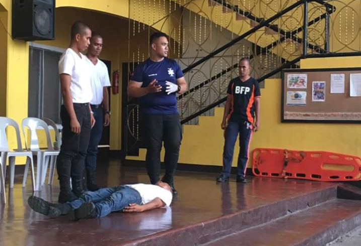

By: Elizabeth Fernandez
The Bureau of Fire Protection (BFP), headed by INSP. Particio C. Vasquez, conducted a fire safety seminar in Enfant Cheri Study Centre, Inc. on August 1, 2019. This is one of the school’s key strategies in maintaining a safe workplace and preventing fire incidents.
The assigned BFP Personnel discussed the different causes of fire and the ways of fire prevention. He further talked about the different stages of fire. He said that a fire can start in an insipient stage where there is no sign of smoke or flame. The second stage is the smoldering stage where smoke is visible.
The last stage is the heat stage where the fire gets bigger and temperature rises to 300 degrees Celsius which can cause damage to the lungs when inhaled.
The personnel also discussed how fire can be controlled or eliminated with the use of fire extinguisher. He shared that in using a fire extinguisher, one must remember PASS.
Pull the pin that is placed on the lever.
Aim the nozzle at the base of the fire.
Squeeze the lever.
Sweep from side to side.
The Cherians were given a chance to simulate a fire drill on Sept. 24 and 27.
On August 23, 2019, a first-aid seminar was also conducted in school by the BFP. The participants were taught how to handle injuries in case of fire or earthquake incidents. The faculty was also trained on administering burn treatment and transferring injured people or casualties.
